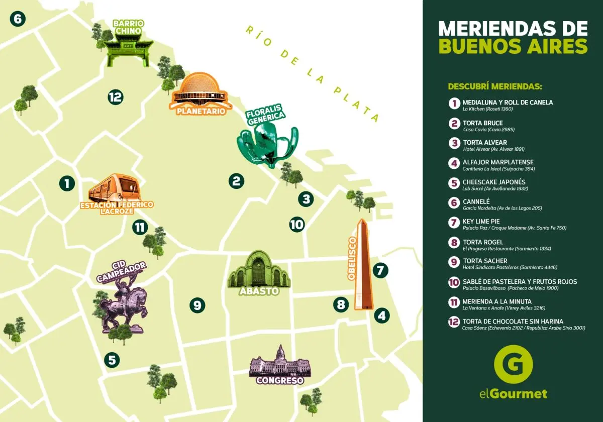

La hora de la merienda es un ritual en Argentina. Es una pausa necesaria antes de la cena, una ceremonia, un momento de encuentro y sobre todo una oportunidad para probar cosas ricas. Visitamos con Ximena Sáenz los mejores lugares para merendar en la ciudad de Buenos Aires, desde los sitios históricos hasta las propuestas de vanguardia.

Merendar es un placer que vale la pena cultivar. Y si buenos aires tiene excelente lugares para comer, ir de brunch, también los tiene, y en abundancia, para ir a merendar y cansarte de comer tortas, galletas, alfajores y acompañarlo de lo que quieras. Te dejamos nuestros recomendados para que sepas dónde encontrar las 17 mejores meriendas de Buenos Aires.